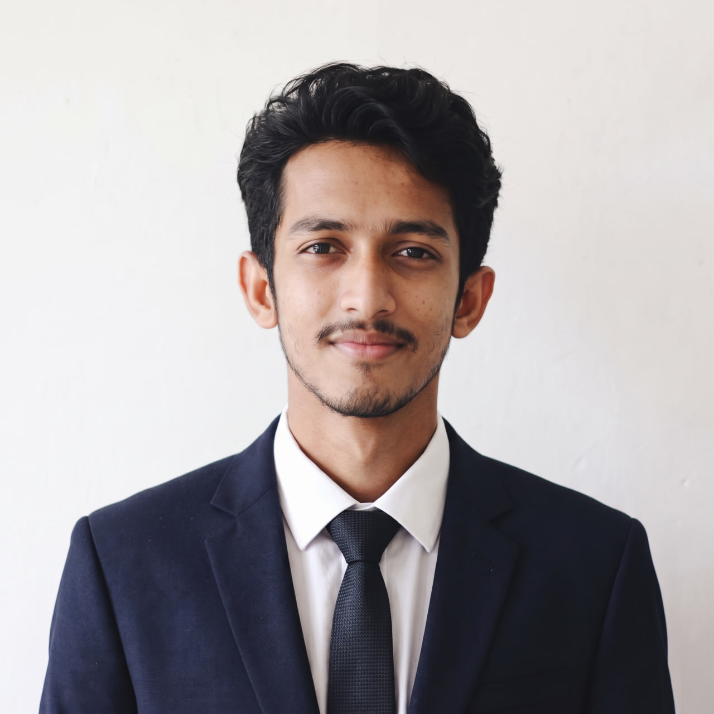
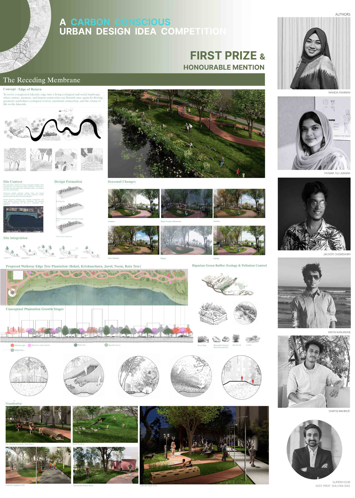
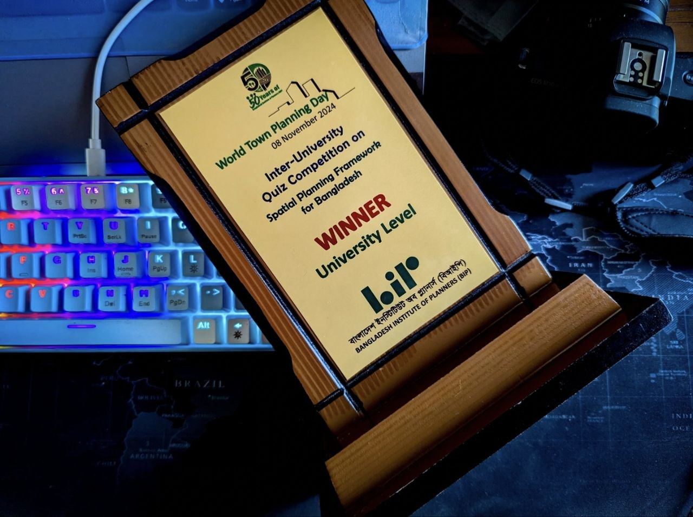
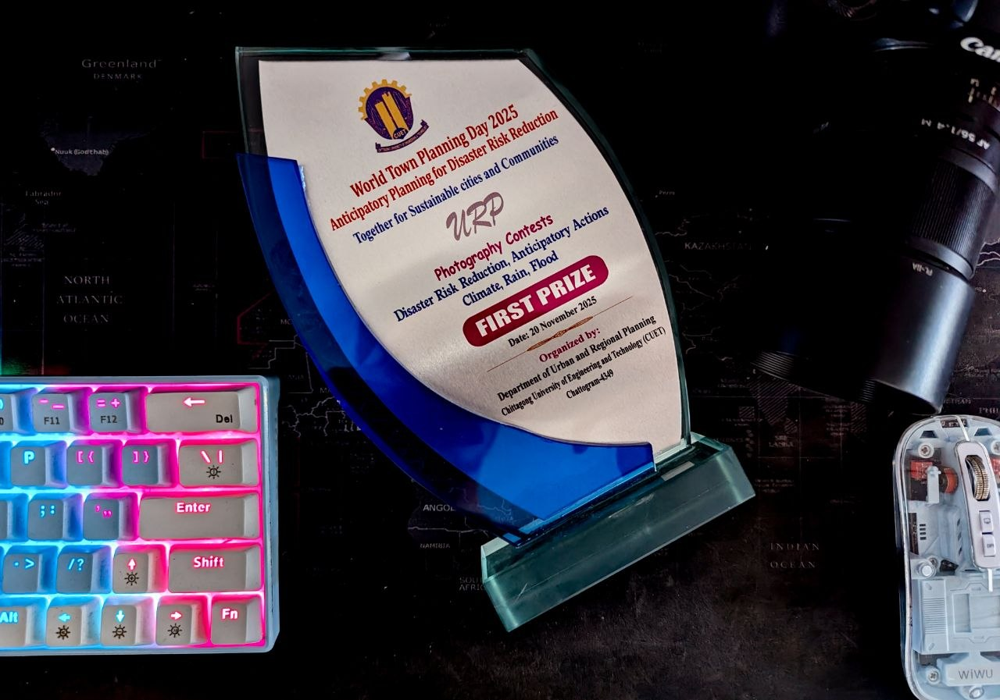
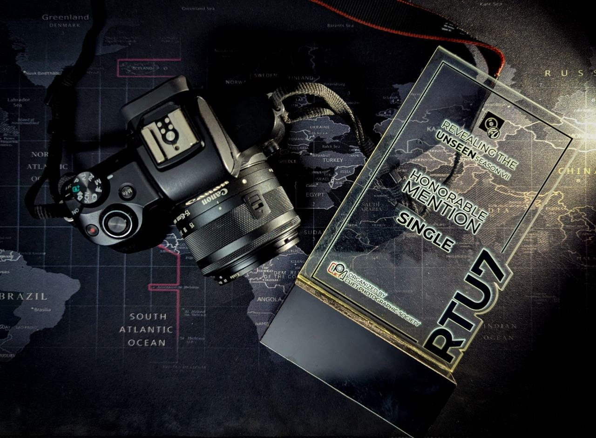

SMShafiq Mahmud
About
I am a final-year undergraduate in Urban and Regional Planning at CUET with a strong research orientation and a technical foundation in geospatial analysis, remote sensing and machine learning. I am a co-author of two preprints and a conference paper, with a manuscript under review and an undergraduate thesis in progress on machine learning-based agricultural drought risk assessment. I am seeking graduate research opportunities.
Research Interests
Geospatial Artificial Intelligence (GeoAI) and Machine Learning
Spatial prediction, susceptibility modeling, model generalization and uncertainty quantification.
Remote Sensing and GIS
Satellite-based environmental monitoring, geospatial data analysis and spatial modeling.
Hydrology and Water Resources
Flood and drought assessment, hydrological modeling and water-related risk analysis.
Climate Change, Environmental Hazards and Resilience
Agricultural drought, flood and landslide susceptibility, climate-related risks and environmental resilience.
Education
Bachelor of Urban and Regional Planning
Chittagong University of Engineering and Technology (CUET). CGPA 3.35/4.00 (up to 6th semester).
HSC, Dhaka College
GPA 5.00/5.00
SSC, Basurhat A.H.C Government High School
GPA 5.00/5.00
Research & Publications
Thesis & ongoing research
Machine learning-based agricultural drought risk assessment in Bangladesh. Department of Urban and Regional Planning, CUET.
Uncertainty-informed bivariate decision zones for storm-impact susceptibility in the cyclone-exposed southwestern coast of Bangladesh.
Coastal land dynamics of Noakhali, Bangladesh (2000–2020): a multi-sensor remote sensing analysis and engineering assessment for economic zone development.
Manuscript under review
Murad, G., Srabony, S. C., Mahmud, S. & Rahman, M. A. Uncertainty-aware Bayesian machine learning for landslide susceptibility mapping in the Chattogram metropolitan hill system, Bangladesh. Journal of Mountain Science (under review). Preprint at EarthArXiv (2026).
Preprint
Mahmud, S., Murad, G. & Rahman, M. A. Enhancing the generalization of flood susceptibility models: a leakage-aware ensemble framework for deltaic landscapes. Preprint at EarthArXiv (2026).
Conference paper
Sarker, S., Mahmud, S., Monjur, A., Talbi, M. A. & Sikder, J. National-scale drought mapping using satellite-derived biophysical indices: towards a robust drought monitoring system in Bangladesh. Presented at the International Conference on Civil Engineering Research & Innovations, Rajshahi University of Engineering & Technology (RUET), Rajshahi, Bangladesh (Paper ID: 336).
Technical report
Mahmud, S., Murad, G. & Rahman, M. A. Fragile slopes, damaged roads: an investigation into clustered landslides along the Rajasthali–Saichal segment of the Border Road, Bangladesh. Newsletter report (unpublished).
Academic Projects
Flood Susceptibility Mapping in Noakhali Using ANN
Developed an ANN-based flood susceptibility model using geospatial and hydro-climatic conditioning factors.
View report (PDF) ↗Nighttime Light Emissions and Urban Vulnerability, Dhaka
- Derived NDBI maps for 2015, 2020 and 2025
- Correlated built-up intensity with nighttime light
- Mapped the most vulnerable urban zones
Air Quality and Its Impact in Chattogram City Corporation
Assessed key air quality indicators and their impact on the urban environment and public health.
View report (PDF) ↗Skills
View all skills by category
Geospatial & Remote Sensing
ArcGIS ProArcMapQGISERDAS ImagineGoogle Earth EngineProgramming & Modeling
PythonRJavaScriptMachine learningSusceptibility modelingUncertainty-aware methodsCore Competencies
Geospatial analysis & modelingDisaster risk & vulnerability assessmentResearch & technical writingData-driven decision makingTeam leadershipDesign & Media
AutoCADSketchUpPhotoshopLightroomPremiere ProDaVinci ResolveCanvaWord / Excel / PowerPointLanguages
Bangla (native)EnglishAwards, Experience & Leadership
Honors & Awards

First PrizeCarbon Conscious Urban Design Idea Competition
UNOPS, RAJUK, MoHPW, with support from BMZ. Concept: “The Receding Membrane”.

Winner · Nov 8, 2024Inter-University Quiz on Spatial Planning Framework for Bangladesh
University level. Bangladesh Institute of Planners.

First Prize · Nov 20, 2025World Town Planning Day Photography Contest
Theme: Anticipatory Planning for Disaster Risk Reduction, CUET.

Honorable Mention · Jun 25, 2026Revealing the Unseen: Season VII
Single category, CUET Photographic Society.
Professional & Field Experience
Industrial Attachment, Dhaka North City Corporation (DNCC)
Team-based study of ward-wise community facilities (health, community, religious, parks and playgrounds). Compared provision against Private Residential Land Development Rules (PRLDR) standards and prepared a comparative analytical report.
Field Visit, Cox’s Bazar Development Authority & Khurushkul Special Ashrayan Project
Observed on-site urban management works, from solid waste management to other services, and visited the world’s largest climate-migrant rehabilitation initiative.
Leadership
- President, CUET Photographic Society (Executive Committee 2026–27)
- Vice-President, Planning Club, CUET (Executive Committee 2026–27)
- Organizing Committee Member, TEDxCUET (2025)
Outreach & Media
For the love of Spatial Analysis
I make step-by-step video tutorials on ArcGIS Pro, ArcMap and ERDAS Imagine, from image classification and network analysis to ModelBuilder.
Latest tutorials
Watch all tutorials on YouTube ↗Photography, videography and drone work
Photography, videography and drone-based aerial work for YPSA, RIMES and Save the Children in Bangladesh, including landslide documentation and a flood-response documentary.
Contact
Open to graduate research opportunities and collaboration.
shafiqmahmud35@gmail.comDownload CVLinkedIn ↗Google Scholar ↗ResearchGate ↗YouTube ↗